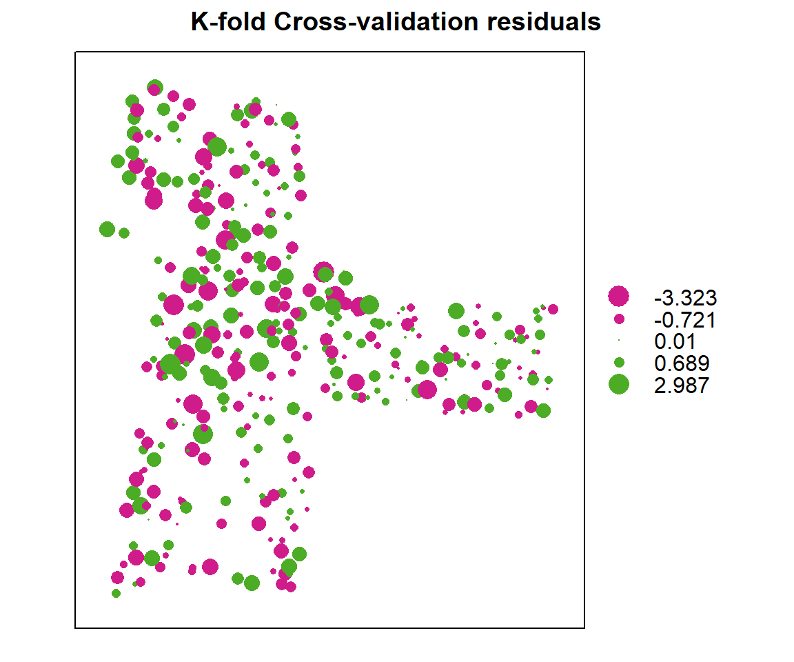
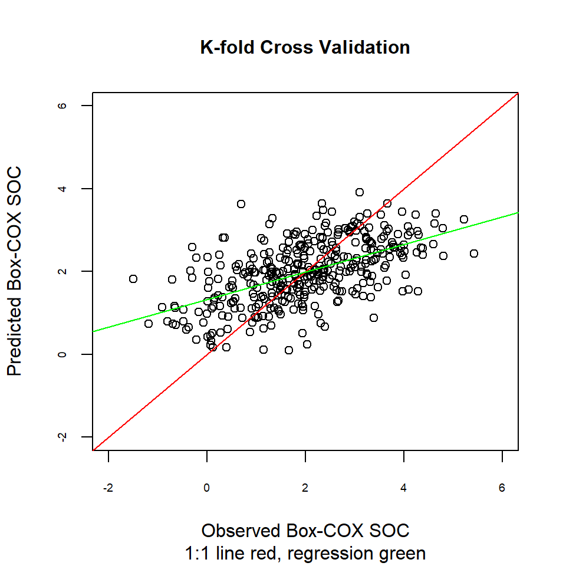

Cross-validation is a re-sampling procedure used to evaluate models on a limited data sample. It is better than residuals evaluation. Two major types of cross-validation techniques are usually use for model evaluation: 1) K-fold cross validation and 2) Leave-one-out cross validation.
In K-fold cross validation, The data set is randomly divided into a test and training set k different times, and model evolution is repeated k times. Each time, one of the k subsets is used as the test set and the other k-1 subsets are put together to form a training set. Then the average error across all k trials is computed. A variant of this method is to randomly divide the data into a test and training set k different times.
In Leave-one-out cross validation, K is equal to N, the number of data points in the set. The model is trained on all the data except for one point and a prediction is made for that point. Eventually model predict at each observation point separately, using all the other observations and e average error is computed and used to evaluate the model.
library(plyr)
library(dplyr)
library(gstat)
library(raster)
library(ggplot2)
library(car)
library(classInt)
library(RStoolbox)
library(spatstat)
library(dismo)
library(fields)
library(gridExtra)The soil organic carbon data (train and test data set) could be found here.
# Define data folder
dataFolder<-"F:\\Spatial_Data_Processing_and_Analysis_R\\Data\\DATA_08\\"train<-read.csv(paste0(dataFolder,"train_data.csv"), header= TRUE) Power Transform uses the maximum likelihood-like approach of Box and Cox (1964) to select a transformation of a univariate or multivariate response for normality. First we have to calculate appropriate transformation parameters using powerTransform() function of car package and then use this parameter to transform the data using bcPower() function.
powerTransform(train$SOC)## Estimated transformation parameter
## train$SOC
## 0.2523339train$SOC.bc<-bcPower(train$SOC, 0.2523339)coordinates(train) = ~x+y# Variogram
v<-variogram(SOC.bc~ 1, data = train, cloud=F)
# Intial parameter set by eye esitmation
m<-vgm(1.5,"Exp",40000,0.5)
# least square fit
m.f<-fit.variogram(v, m)
m.f## model psill range
## 1 Nug 0.5165678 0.00
## 2 Exp 1.0816886 82374.23We will evaluate the model with k-fold cross validation. We will use krige.cv() function
cv<-krige.cv(SOC.bc ~ 1,
train, # data
model = m.f, # fitted varigram model
nfold=10) # five-fold cross validationsummary(cv)## Object of class SpatialPointsDataFrame
## Coordinates:
## min max
## x -1246454 83927.82
## y 1019863 2526240.55
## Is projected: NA
## proj4string : [NA]
## Number of points: 368
## Data attributes:
## var1.pred var1.var observed residual
## Min. :0.09685 Min. :0.8118 Min. :-1.499 Min. :-3.322559
## 1st Qu.:1.45533 1st Qu.:0.9819 1st Qu.: 1.149 1st Qu.:-0.720574
## Median :1.99373 Median :1.0492 Median : 1.974 Median : 0.009772
## Mean :1.98323 Mean :1.0613 Mean : 1.981 Mean :-0.002032
## 3rd Qu.:2.55045 3rd Qu.:1.1284 3rd Qu.: 2.919 3rd Qu.: 0.689298
## Max. :3.91871 Max. :1.4058 Max. : 5.423 Max. : 2.986926
## zscore fold
## Min. :-3.412563 Min. : 1.000
## 1st Qu.:-0.686537 1st Qu.: 3.000
## Median : 0.009391 Median : 6.000
## Mean :-0.000888 Mean : 5.546
## 3rd Qu.: 0.679506 3rd Qu.: 8.000
## Max. : 3.021788 Max. :10.000bubble(cv, zcol = "residual", maxsize = 2.0, main = "K-fold Cross-validation residuals")
# Mean Error (ME)
ME<-round(mean(cv$residual),3)
# Mean Absolute Error
MAE<-round(mean(abs(cv$residual)),3)
# Root Mean Squre Error (RMSE)
RMSE<-round(sqrt(mean(cv$residual^2)),3)
# Mean Squared Deviation Ratio (MSDR)
MSDR<-mean(cv$residual^2/cv$var1.var)
ME## [1] -0.002MAE## [1] 0.842RMSE## [1] 1.061MSDR## [1] 1.068851Another way to compare actual vs. predicted values is by a linear regression between them. Ideally, this would be a 1:1 line: intercept is 0 (no bias) and the slope is set at 1 (gain is equal).
lm.cv <- lm(cv$var1.pred ~ cv$observed)
summary(lm.cv)##
## Call:
## lm(formula = cv$var1.pred ~ cv$observed)
##
## Residuals:
## Min 1Q Median 3Q Max
## -1.78029 -0.38672 -0.02555 0.41988 2.07663
##
## Coefficients:
## Estimate Std. Error t value Pr(>|t|)
## (Intercept) 1.32144 0.06048 21.85 <2e-16 ***
## cv$observed 0.33403 0.02562 13.04 <2e-16 ***
## ---
## Signif. codes: 0 '***' 0.001 '**' 0.01 '*' 0.05 '.' 0.1 ' ' 1
##
## Residual standard error: 0.6308 on 366 degrees of freedom
## Multiple R-squared: 0.3171, Adjusted R-squared: 0.3153
## F-statistic: 170 on 1 and 366 DF, p-value: < 2.2e-16plot(cv$observed, cv$var1.pred,main=list("K-fold Cross Validation",cex=1),
sub = "1:1 line red, regression green",
xlab = "Observed Box-COX SOC",
ylab = "Predicted Box-COX SOC",
cex.axis=.6,
xlim = c(-2,6),
ylim =c(-2,6),
pch = 21,
cex=1)
abline(0, 1, col="red")
abline(lm.cv, col = "green")
cv.LOOCV<-krige.cv(SOC.bc ~ 1,
train, # data
model = m.f) # fitted varigram model summary (cv.LOOCV)## Object of class SpatialPointsDataFrame
## Coordinates:
## min max
## x -1246454 83927.82
## y 1019863 2526240.55
## Is projected: NA
## proj4string : [NA]
## Number of points: 368
## Data attributes:
## var1.pred var1.var observed residual
## Min. :0.1107 Min. :0.8041 Min. :-1.499 Min. :-3.188887
## 1st Qu.:1.4400 1st Qu.:0.9591 1st Qu.: 1.149 1st Qu.:-0.708533
## Median :1.9942 Median :1.0281 Median : 1.974 Median :-0.008027
## Mean :1.9824 Mean :1.0382 Mean : 1.981 Mean :-0.001238
## 3rd Qu.:2.5319 3rd Qu.:1.1016 3rd Qu.: 2.919 3rd Qu.: 0.723783
## Max. :3.9177 Max. :1.4022 Max. : 5.423 Max. : 2.934362
## zscore fold
## Min. :-3.286447 Min. : 1.00
## 1st Qu.:-0.698335 1st Qu.: 92.75
## Median :-0.008109 Median :184.50
## Mean :-0.000655 Mean :184.50
## 3rd Qu.: 0.721153 3rd Qu.:276.25
## Max. : 2.992528 Max. :368.00# Mean Error (ME)
ME.LOOCV<-round(mean(cv.LOOCV$residual),3)
# Mean Absolute Error
MAE.LOOCV<-round(mean(abs(cv.LOOCV$residual)),3)
# Root Mean Squre Error (RMSE)
RMSE.LOOCV<-round(sqrt(mean(cv.LOOCV$residual^2)),3)
# Mean Squared Deviation Ratio (MSDR)
MSDR.LOOCV<-mean(cv.LOOCV$residual^2/cv$var1.var)
ME.LOOCV## [1] -0.001MAE.LOOCV## [1] 0.832RMSE.LOOCV## [1] 1.042MSDR.LOOCV## [1] 1.034742rm(list = ls())